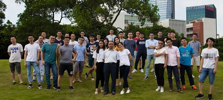

广东省光纤传感技术粤港联合研究中心 2012年王义平教授入职深圳大学光电工程学院，依托光学工程博士点和博士后流动站组建光纤传感技术研究团队和实验室。 2015年“光纤传感技术粤港联合研究中心”（与香港理工大学靳伟教授联合）获广东省科技厅批准立项建设。实验室围绕光子器件和传感系统领域专业建设、人才培养、科学研究、产业应用四个核心方向开展创新工作，研究方向：光子器件微纳制备技术；光纤微结构传感技术；光纤新材料传感技术，致力于建设成为本领域具有国际影响力的研究团队。...Join Us !

学术动态
- 2018年9月6日 学术报告——Femtosecond laser 3D microfabrication and its applications 吴东教授(中国科学技术大学)
- 2018年4月27日 学术报告——高精度光纤时间频率传递技术(陈建平 教授)
- 2018年4月9日 学术报告——超高分辨率光矢量分析技术(潘时龙 教授)
- 2018年1月15日 学术报告—— Stimulated Brillouin Scattering: from optical fiber to silicon-based chip (孙军强 教授)
- 2018年1月23日 学术报告——基于壳聚糖的光纤化学传感器 (陈志超 教授)
- 2017年8月9日 林初跑文章入选2016 Photonics Research Most Cited Articles
- 2017年8月7日 本课题组代表参加 ICOCN 2017国际会议
- 2016年5月19日 廖常锐老师论文入选 Optics Letters’15 Most Cited Articles
- 2016年4月20日 第九届中国光纤传感学术会议暨产业化论坛成功举行
- 2016年3月2日 前全国人大常委会副委员长李铁映一行参观我校光电工程学院
- 2015年10月13日 广东省光纤传感技术粤港联合研究中心揭牌仪式隆重举行
- More >>